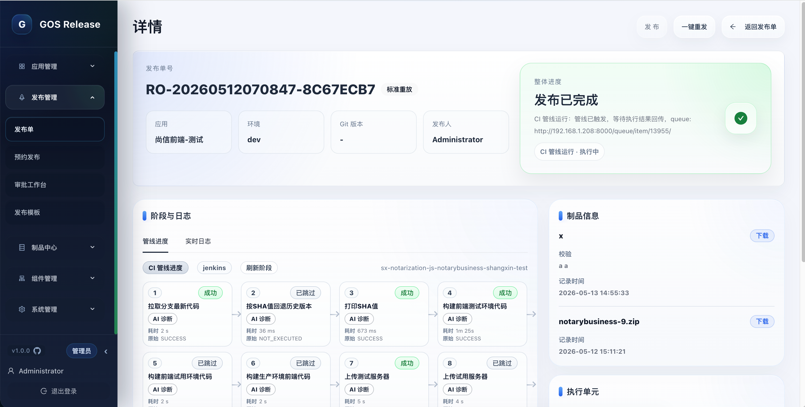
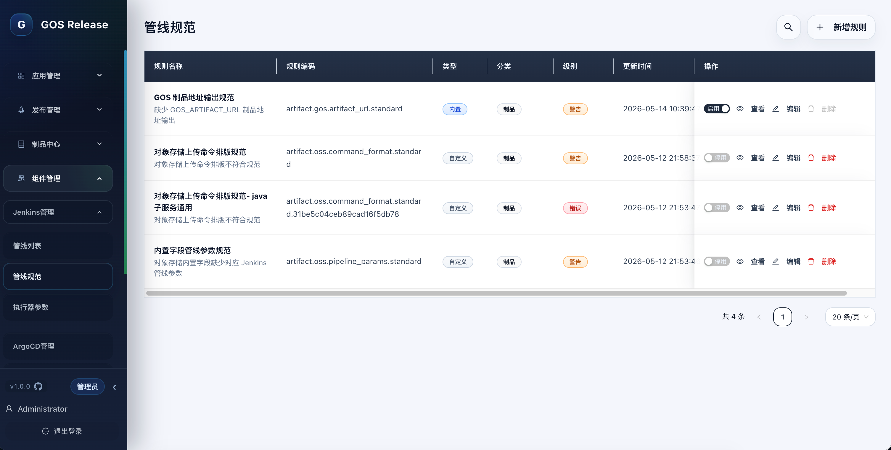
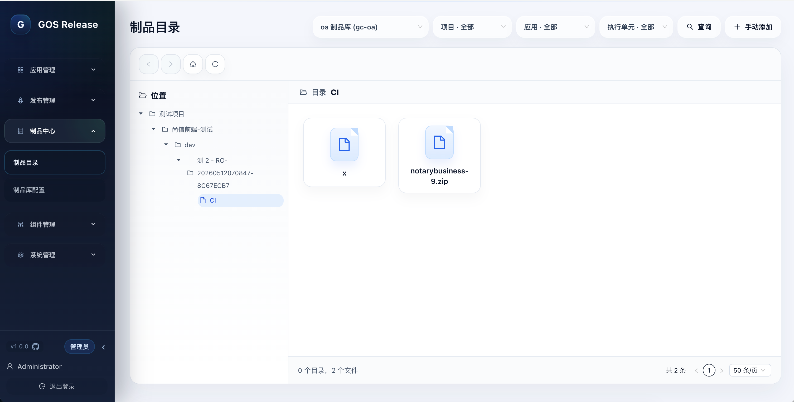
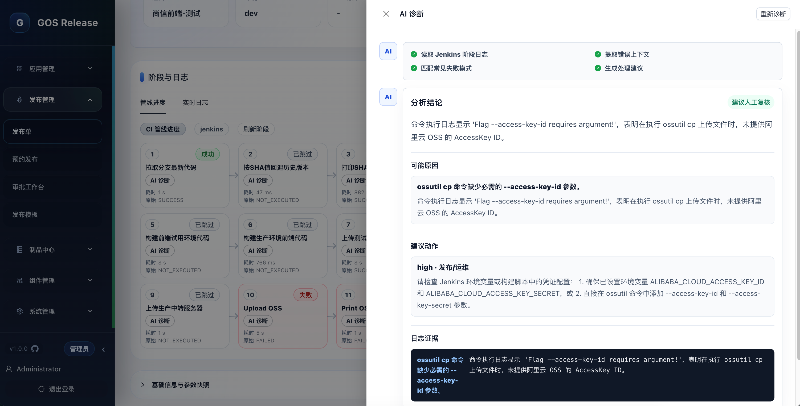

发布单工作台
从创建、预检、审批、执行、取消到回滚和重放，围绕发布单组织完整生命周期，避免在多个执行系统之间切换。

GOS 不替代 Jenkins、ArgoCD 或 GitOps。它把这些执行器编排到同一套发布语言里，让申请人少填底层细节，让平台沉淀治理数据。
从创建、预检、审批、执行、取消到回滚和重放，围绕发布单组织完整生命周期，避免在多个执行系统之间切换。
发布模板固化 CI/CD 执行单元、参数映射、审批模式、Hook 和通知策略，把发布规则前置到流程开始前。
对 Jenkins Pipeline 的制品输出、上传命令、参数命名等关键边界做扫描，保留团队自定义步骤的自由度。
失败阶段自动拉取日志，提取错误上下文、可能原因、证据和建议动作，把排障结果保存在发布上下文中。
聚合发布过程产物、校验信息、对象路径和下载入口，避免制品链接散落在流水线日志和聊天记录里。
飞书、企微、钉钉通知源和 Markdown 模板统一管理，发布模板按阶段和条件触发通知或 Agent 任务。
发布申请人只面对标准字段和必要选择，平台在背后解析模板、执行器、参数、权限和环境链路。每一步都能回到发布单追踪。
系统根据应用、环境、权限和模板展示可用发布方式，隐藏底层执行器映射细节。
校验执行单元、参数完整性、并发锁、模板合规性和管线规范，再进入审批工作台。
Jenkins、GitOps、ArgoCD 和 Agent 任务按模板推进，日志、阶段、制品、Hook 和通知持续回写。

页面以高频操作和信息扫描为优先级，重点呈现发布状态、模板绑定、制品归档、管线规则和诊断结论。
以应用为入口查看发布态势、最近发布单和可发布资源。

模板驱动字段展示，让申请人只填写本次发布真正需要的内容。

发布产物、阶段失败原因和建议动作沉淀在同一条发布记录中。

通过内置和自定义规则约束平台必须识别的执行边界。

按制品库、项目、应用、执行单元和发布单组织产物资产。

把失败阶段日志转换为结论、证据、原因和可执行建议。
不同团队可以继续使用不同执行器。GOS 负责把入口、模板、权限、参数和审计统一起来。
构建、部署、审批、制品归档和通知按模板串联，适合日常稳定发布。
把部署拆成可观察的步骤，支持暂停、确认、继续和失败定位。
通过 Agent 执行脚本、文件分发和 Hook，适配平台不能直连的环境。
解析环境、仓库、路径、应用和实例，让 CI 产物继续流向 CD。